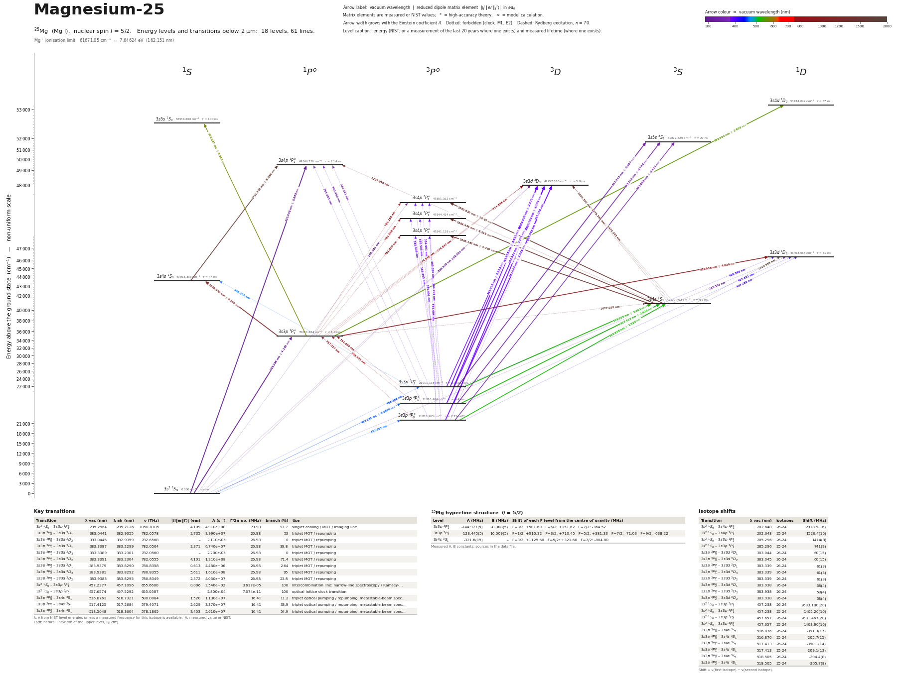

Magnesium-25 energy level diagram
Energy levels and transitions of neutral 25Mg (Mg I, nuclear spin I = 5/2): 18 levels and 61 lines below 2 µm, each with its vacuum wavelength, frequency and, for 23 of them, the reduced dipole matrix element. Level energies come from the NIST Atomic Spectra Database; transition rates are 61 NIST. Neutral magnesium is also the starting point for loading Mg+ ion traps by photoionisation.
Hover a line or a level to isolate it, click to keep it selected. Scroll to zoom, drag to move.

Download: diagram (PDF) diagram (SVG) transitions (CSV) levels (CSV) source code

Key transitions of 25Mg
| Transition | λ vac (nm) | λ air (nm) | ν (THz) | |⟨J‖er‖J′⟩| (ea₀) | A (s⁻¹) | Γ/2π up. (MHz) | branch (%) | Use |
|---|---|---|---|---|---|---|---|---|
| 3s2 1S0 – 3s3p 1P°1 | 285.2964 | 285.2126 | 1050.8105 | 4.109 | 4.910e+08 | 79.98 | 97.7 | singlet cooling / MOT / imaging line |
| 3s3p 3P°0 – 3s3d 3D1 | 383.0441 | 382.9355 | 782.6578 | 2.735 | 8.990e+07 | 26.98 | 53 | triplet MOT / repumping |
| 3s3p 3P°0 – 3s3d 3D2 | 383.0446 | 382.9359 | 782.6568 | – | 2.110e-05 | 26.98 | 0 | triplet MOT / repumping |
| 3s3p 3P°1 – 3s3d 3D1 | 383.3387 | 383.2299 | 782.0564 | 2.371 | 6.740e+07 | 26.98 | 39.8 | triplet MOT / repumping |
| 3s3p 3P°1 – 3s3d 3D3 | 383.3389 | 383.2301 | 782.0560 | – | 2.200e-05 | 26.98 | 0 | triplet MOT / repumping |
| 3s3p 3P°1 – 3s3d 3D2 | 383.3391 | 383.2304 | 782.0555 | 4.101 | 1.210e+08 | 26.98 | 71.4 | triplet MOT / repumping |
| 3s3p 3P°2 – 3s3d 3D1 | 383.9379 | 383.8290 | 780.8358 | 0.613 | 4.480e+06 | 26.98 | 2.64 | triplet MOT / repumping |
| 3s3p 3P°2 – 3s3d 3D3 | 383.9381 | 383.8292 | 780.8355 | 5.611 | 1.610e+08 | 26.98 | 95 | triplet MOT / repumping |
| 3s3p 3P°2 – 3s3d 3D2 | 383.9383 | 383.8295 | 780.8349 | 2.372 | 4.030e+07 | 26.98 | 23.8 | triplet MOT / repumping |
| 3s2 1S0 – 3s3p 3P°1 | 457.2377 | 457.1096 | 655.6600 | 0.006 | 2.540e+02 | 3.617e-05 | 100 | intercombination line: narrow-line spectroscopy / Ramsey-… |
| 3s2 1S0 – 3s3p 3P°0 | 457.6574 | 457.5292 | 655.0587 | – | 5.800e-04 | 7.074e-11 | 100 | optical lattice clock transition |
| 3s3p 3P°0 – 3s4s 3S1 | 516.8761 | 516.7321 | 580.0084 | 1.520 | 1.130e+07 | 16.41 | 11.2 | triplet optical pumping / repumping, metastable-beam spec… |
| 3s3p 3P°1 – 3s4s 3S1 | 517.4125 | 517.2684 | 579.4071 | 2.629 | 3.370e+07 | 16.41 | 33.9 | triplet optical pumping / repumping, metastable-beam spec… |
| 3s3p 3P°2 – 3s4s 3S1 | 518.5048 | 518.3604 | 578.1865 | 3.403 | 5.610e+07 | 16.41 | 54.9 | triplet optical pumping / repumping, metastable-beam spec… |
λ, ν from NIST level energies unless a measured frequency for this isotope is available. A: measured value or NIST. Γ/2π: natural linewidth of the upper level, 1/(2πτ).
25Mg hyperfine structure (I = 5/2)
| Level | A (MHz) | B (MHz) | Shift of each F level from the centre of gravity (MHz) |
|---|---|---|---|
| 3s3p 3P°1 | -144.977(5) | -8.308(5) | F=3/2: +501.60 F=5/2: +151.62 F=7/2: -364.52 |
| 3s3p 3P°2 | -128.445(5) | 16.009(5) | F=1/2: +910.32 F=3/2: +710.45 F=5/2: +381.33 F=7/2: -71.03 F=9/2: -638.22 |
| 3s4s 3S1 | -321.6(15) | – | F=3/2: +1125.60 F=5/2: +321.60 F=7/2: -804.00 |
Measured A, B constants; sources in the data file.
Isotope shifts
| Transition | λ vac (nm) | Isotopes | Shift (MHz) |
|---|---|---|---|
| 3s2 1S0 – 3s4p 1P°1 | 202.648 | 26-24 | 2918.9(16) |
| 3s2 1S0 – 3s4p 1P°1 | 202.648 | 25-24 | 1526.4(16) |
| 3s2 1S0 – 3s3p 1P°1 | 285.296 | 26-24 | 1414(8) |
| 3s2 1S0 – 3s3p 1P°1 | 285.296 | 25-24 | 741(9) |
| 3s3p 3P°0 – 3s3d 3D1 | 383.044 | 26-24 | 60(15) |
| 3s3p 3P°0 – 3s3d 3D2 | 383.045 | 26-24 | 60(15) |
| 3s3p 3P°1 – 3s3d 3D1 | 383.339 | 26-24 | 61(3) |
| 3s3p 3P°1 – 3s3d 3D3 | 383.339 | 26-24 | 61(3) |
| 3s3p 3P°1 – 3s3d 3D2 | 383.339 | 26-24 | 61(3) |
| 3s3p 3P°2 – 3s3d 3D1 | 383.938 | 26-24 | 58(4) |
| 3s3p 3P°2 – 3s3d 3D3 | 383.938 | 26-24 | 58(4) |
| 3s3p 3P°2 – 3s3d 3D2 | 383.938 | 26-24 | 58(4) |
| 3s2 1S0 – 3s3p 3P°1 | 457.238 | 26-24 | 2683.180(20) |
| 3s2 1S0 – 3s3p 3P°1 | 457.238 | 25-24 | 1405.20(10) |
| 3s2 1S0 – 3s3p 3P°0 | 457.657 | 26-24 | 2681.467(20) |
| 3s2 1S0 – 3s3p 3P°0 | 457.657 | 25-24 | 1403.90(10) |
| 3s3p 3P°0 – 3s4s 3S1 | 516.876 | 26-24 | -391.3(17) |
| 3s3p 3P°0 – 3s4s 3S1 | 516.876 | 25-24 | -205.7(15) |
| 3s3p 3P°1 – 3s4s 3S1 | 517.413 | 26-24 | -390.1(14) |
| 3s3p 3P°1 – 3s4s 3S1 | 517.413 | 25-24 | -209.1(13) |
| 3s3p 3P°2 – 3s4s 3S1 | 518.505 | 26-24 | -394.4(8) |
| 3s3p 3P°2 – 3s4s 3S1 | 518.505 | 25-24 | -205.7(8) |
Shift = ν(first isotope) − ν(second isotope).
All 25Mg transitions below 2 µm
| Lower level | Upper level | λ vacuum (nm) | λ air (nm) | ν (THz) | Type | |⟨J‖er‖J′⟩| (ea₀) | A (s⁻¹) | Branching (%) | Source of matrix element / A |
|---|---|---|---|---|---|---|---|---|---|
| 3s2 1S0 | 3s4p 1P°1 | 202.6477 | 202.5825 | 1479.3777 | E1 | 0.868 NIST | 6.120e+07 NIST | 82 | NIST ASD (accuracy B+) |
| 3s2 1S0 | 3s3d 3D1 | 208.5199 | 208.4535 | 1437.7164 | M1 | – | 7.240e-12 NIST | 0 | NIST ASD (accuracy E) |
| 3s2 1S0 | 3s3d 3D2 | 208.5200 | 208.4537 | 1437.7155 | E2 | – | 1.060e-03 NIST | 0 | NIST ASD (accuracy C) |
| 3s2 1S0 | 3s4p 3P°2 | 208.9813 | 208.9149 | 1434.5418 | M2 | – | 2.690e+00 NIST | – | NIST ASD (accuracy B+) |
| 3s2 1S0 | 3s3d 1D2 | 215.5030 | 215.4353 | 1391.1289 | E2 | – | 1.640e+03 NIST | 0.01 | NIST ASD (accuracy A) |
| 3s2 1S0 | 3s3p 1P°1 | 285.2964 | 285.2126 | 1050.8105 | E1 | 4.109 NIST | 4.910e+08 NIST | 97.7 | NIST ASD (accuracy A) |
| 3s3p 3P°0 | 3s5s 3S1 | 333.0877 | 332.9919 | 900.0405 | E1 | 0.411 NIST | 3.090e+06 NIST | 8.96 | NIST ASD (accuracy D+) |
| 3s3p 3P°1 | 3s5s 3S1 | 333.3104 | 333.2146 | 899.4392 | E1 | 0.748 NIST | 1.020e+07 NIST | 29.6 | NIST ASD (accuracy B) |
| 3s3p 3P°2 | 3s5s 3S1 | 333.7634 | 333.6674 | 898.2186 | E1 | 0.967 NIST | 1.700e+07 NIST | 49.3 | NIST ASD (accuracy B) |
| 3s3p 3P°0 | 3s4p 1P°1 | 363.6850 | 363.5813 | 824.3191 | M1 | – | 9.890e-05 NIST | 0 | NIST ASD (accuracy D) |
| 3s3p 3P°1 | 3s4p 1P°1 | 363.9505 | 363.8468 | 823.7177 | E2+M1 | – | 2.858e-04 NIST | 0 | NIST ASD (accuracy C) |
| 3s3p 3P°2 | 3s4p 1P°1 | 364.4906 | 364.3867 | 822.4971 | E2+M1 | – | 4.020e-04 NIST | 0 | NIST ASD (accuracy C) |
| 3s3p 3P°0 | 3s3d 3D1 | 383.0441 | 382.9355 | 782.6578 | E1 | 2.735 NIST | 8.990e+07 NIST | 53 | NIST ASD (accuracy B+) |
| 3s3p 3P°0 | 3s3d 3D2 | 383.0446 | 382.9359 | 782.6568 | M2 | – | 2.110e-05 NIST | 0 | NIST ASD (accuracy B) |
| 3s3p 3P°1 | 3s3d 3D1 | 383.3387 | 383.2299 | 782.0564 | E1 | 2.371 NIST | 6.740e+07 NIST | 39.8 | NIST ASD (accuracy B+) |
| 3s3p 3P°1 | 3s3d 3D3 | 383.3389 | 383.2301 | 782.0560 | M2 | – | 2.200e-05 NIST | 0 | NIST ASD (accuracy B) |
| 3s3p 3P°1 | 3s3d 3D2 | 383.3391 | 383.2304 | 782.0555 | E1 | 4.101 NIST | 1.210e+08 NIST | 71.4 | NIST ASD (accuracy B+) |
| 3s3p 3P°2 | 3s3d 3D1 | 383.9379 | 383.8290 | 780.8358 | E1 | 0.613 NIST | 4.480e+06 NIST | 2.64 | NIST ASD (accuracy B) |
| 3s3p 3P°2 | 3s3d 3D3 | 383.9381 | 383.8292 | 780.8355 | E1 | 5.611 NIST | 1.610e+08 NIST | 95 | NIST ASD (accuracy B+) |
| 3s3p 3P°2 | 3s3d 3D2 | 383.9383 | 383.8295 | 780.8349 | E1 | 2.372 NIST | 4.030e+07 NIST | 23.8 | NIST ASD (accuracy B+) |
| 3s3p 3P°0 | 3s4p 3P°2 | 384.6042 | 384.4951 | 779.4831 | E2 | – | 1.460e+01 NIST | – | NIST ASD (accuracy B+) |
| 3s3p 3P°0 | 3s4p 3P°1 | 384.7040 | 384.5949 | 779.2808 | M1 | – | 3.050e-05 NIST | – | NIST ASD (accuracy D) |
| 3s3p 3P°1 | 3s4p 3P°2 | 384.9011 | 384.7920 | 778.8817 | E2+M1 | – | 3.280e+01 NIST | – | NIST ASD (accuracy B+) |
| 3s3p 3P°1 | 3s4p 3P°1 | 385.0011 | 384.8920 | 778.6794 | E2+M1 | – | 1.830e+01 NIST | – | NIST ASD (accuracy E) |
| 3s3p 3P°1 | 3s4p 3P°0 | 385.0500 | 384.9408 | 778.5806 | M1 | – | 9.200e-05 NIST | – | NIST ASD (accuracy D) |
| 3s3p 3P°2 | 3s4p 3P°2 | 385.5052 | 385.3960 | 777.6612 | E2+M1 | – | 2.550e+01 NIST | – | NIST ASD (accuracy B+) |
| 3s3p 3P°2 | 3s4p 3P°1 | 385.6056 | 385.4962 | 777.4589 | E2+M1 | – | 5.480e+01 NIST | – | NIST ASD (accuracy B+) |
| 3s3p 3P°2 | 3s4p 3P°0 | 385.6546 | 385.5452 | 777.3601 | E2 | – | 7.320e+01 NIST | – | NIST ASD (accuracy B+) |
| 3s3p 3P°0 | 3s3d 1D2 | 407.2878 | 407.1729 | 736.0702 | M2 | – | 4.710e-04 NIST | 0 | NIST ASD (accuracy B+) |
| 3s3p 3P°1 | 3s3d 1D2 | 407.6209 | 407.5058 | 735.4689 | M2 | – | 1.050e-03 NIST | 0 | NIST ASD (accuracy B+) |
| 3s3p 3P°2 | 3s3d 1D2 | 408.2985 | 408.1832 | 734.2483 | M2 | – | 8.090e-04 NIST | 0 | NIST ASD (accuracy B+) |
| 3s2 1S0 | 3s3p 3P°2 | 456.3881 | 456.2602 | 656.8806 | M2 | – | 3.980e-03 NIST | 100 | NIST ASD (accuracy B+) |
| 3s2 1S0 | 3s3p 3P°1 | 457.2377 | 457.1096 | 655.6600 | E1 (intercombination) | 0.006 NIST | 2.540e+02 NIST | 100 | NIST ASD (accuracy D) |
| 3s2 1S0 | 3s3p 3P°0 | 457.6574 | 457.5292 | 655.0587 | clock | – | 5.800e-04 NIST | 100 | NIST ASD (accuracy D) |
| 3s3p 3P°2 | 3s4s 1S0 | 463.1312 | 463.0015 | 647.3165 | M2 | – | 2.040e-03 NIST | 0 | NIST ASD (accuracy B+) |
| 3s3p 3P°0 | 3s4s 3S1 | 516.8761 | 516.7321 | 580.0084 | E1 | 1.520 NIST | 1.130e+07 NIST | 11.2 | NIST ASD (accuracy B+) |
| 3s3p 3P°1 | 3s4s 3S1 | 517.4125 | 517.2684 | 579.4071 | E1 | 2.629 NIST | 3.370e+07 NIST | 33.9 | NIST ASD (accuracy B+) |
| 3s3p 3P°2 | 3s4s 3S1 | 518.5048 | 518.3604 | 578.1865 | E1 | 3.403 NIST | 5.610e+07 NIST | 54.9 | NIST ASD (accuracy A) |
| 3s3p 1P°1 | 3s4d 1D2 | 552.9940 | 552.8405 | 542.1260 | E1 | 2.408 NIST | 1.390e+07 NIST | 79.2 | NIST ASD (accuracy B+) |
| 3s3p 1P°1 | 3s5s 1S0 | 571.2672 | 571.1088 | 524.7850 | E1 | 0.596 NIST | 3.860e+06 NIST | 38.6 | NIST ASD (accuracy B) |
| 3s3p 3P°0 | 3s3p 1P°1 | 757.5265 | 757.3179 | 395.7518 | M1 | – | 9.670e-05 NIST | 0 | NIST ASD (accuracy D+) |
| 3s3p 3P°1 | 3s3p 1P°1 | 758.6793 | 758.4705 | 395.1504 | E2+M1 | – | 1.098e-04 NIST | 0 | NIST ASD (accuracy C) |
| 3s3p 3P°2 | 3s3p 1P°1 | 761.0300 | 760.8206 | 393.9299 | E2+M1 | – | 1.455e-04 NIST | 0 | NIST ASD (accuracy C) |
| 3s3p 1P°1 | 3s3d 3D1 | 774.8458 | 774.6326 | 386.9060 | M2 | – | 6.090e-07 NIST | 0 | NIST ASD (accuracy C+) |
| 3s3p 1P°1 | 3s3d 3D3 | 774.8466 | 774.6334 | 386.9056 | M2 | – | 2.200e-05 NIST | 0 | NIST ASD (accuracy B+) |
| 3s3p 1P°1 | 3s3d 3D2 | 774.8476 | 774.6345 | 386.9050 | M2 | – | 5.480e-06 NIST | 0 | NIST ASD (accuracy B) |
| 3s3p 1P°1 | 3s4p 3P°2 | 781.2562 | 781.0413 | 383.7313 | E2+M1 | – | 4.780e-05 NIST | – | NIST ASD (accuracy C+) |
| 3s3p 1P°1 | 3s4p 3P°1 | 781.6683 | 781.4533 | 383.5290 | E2+M1 | – | 4.303e-04 NIST | – | NIST ASD (accuracy C+) |
| 3s3p 1P°1 | 3s4p 3P°0 | 781.8697 | 781.6546 | 383.4302 | M1 | – | 4.110e-05 NIST | – | NIST ASD (accuracy D) |
| 3s3p 1P°1 | 3s3d 1D2 | 880.9175 | 880.6756 | 340.3184 | E1 | 4.629 NIST | 1.270e+07 NIST | 100 | NIST ASD (accuracy A) |
| 3s3p 1P°1 | 3s4s 1S0 | 1183.1423 | 1182.8185 | 253.3867 | E1 | 4.260 NIST | 2.220e+07 NIST | 100 | NIST ASD (accuracy A) |
| 3s4s 3S1 | 3s4p 1P°1 | 1227.0953 | 1226.7596 | 244.3107 | M2 | – | 6.230e-05 NIST | 0 | NIST ASD (accuracy B+) |
| 3s4s 3S1 | 3s3d 3D1 | 1479.3654 | 1478.9612 | 202.6494 | E2+M1 | – | 2.330e+00 NIST | 0 | NIST ASD (accuracy A) |
| 3s4s 3S1 | 3s3d 3D3 | 1479.3683 | 1478.9641 | 202.6490 | E2 | – | 2.330e+00 NIST | 0 | NIST ASD (accuracy A) |
| 3s4s 3S1 | 3s3d 3D2 | 1479.3722 | 1478.9680 | 202.6484 | E2+M1 | – | 2.330e+00 NIST | 0 | NIST ASD (accuracy A) |
| 3s4s 3S1 | 3s4p 3P°2 | 1502.9099 | 1502.4992 | 199.4747 | E1 | 10.63 NIST | 1.350e+07 NIST | – | NIST ASD (accuracy A) |
| 3s4s 3S1 | 3s4p 3P°1 | 1504.4356 | 1504.0246 | 199.2724 | E1 | 8.219 NIST | 1.340e+07 NIST | – | NIST ASD (accuracy A) |
| 3s4s 3S1 | 3s4p 3P°0 | 1505.1817 | 1504.7705 | 199.1736 | E1 | 4.749 NIST | 1.340e+07 NIST | – | NIST ASD (accuracy B+) |
| 3s3p 1P°1 | 3s4s 3S1 | 1627.0377 | 1626.5933 | 184.2566 | M2 | – | 3.650e-07 NIST | 0 | NIST ASD (accuracy B) |
| 3s4s 1S0 | 3s4p 1P°1 | 1711.3336 | 1710.8663 | 175.1806 | E1 | 8.086 NIST | 8.810e+06 NIST | 11.8 | NIST ASD (accuracy A) |
| 3s4s 3S1 | 3s3d 1D2 | 1920.9853 | 1920.4609 | 156.0618 | E2+M1 | – | 3.120e-07 NIST | 0 | NIST ASD (accuracy C+) |
Reduced dipole matrix elements follow the convention A = ω³|d|²/(3πε₀ħc³(2J′+1)), with J′ the upper level. Tags show where a number comes from: measured, NIST compilation, high-accuracy theory, or a model calculation.
25Mg energy levels
Mg⁺ ionisation limit 61671.05 cm⁻¹ = 7.64624 eV (162.151 nm)
Sources
- Aldenius, Tanner, Johansson, Lundberg, Ryan, Astron. Astrophys. 461, 767 (2007) [arXiv:as…
- Hansen, Therkildsen, Malossi, Jensen, van Ooijen, Brusch, Muller, Hald, Thomsen, Phys. Re…
- He, Therkildsen, Jensen, Brusch, Thomsen, Porsev, Phys. Rev. A 80, 024501 (2009) [arXiv:0…
- Jensen, He, Westergaard, Gunnarsson, Madsen, Brusch, Hald, Thomsen, Phys. Rev. Lett. 107,…
- Jonsson, Kroll, Persson, Svanberg, Phys. Rev. A 30, 2429 (1984); quoted in Table 1 of Peh…
- Kwiatkowski, Teppner, Zimmermann, Z. Phys. A 294, 109 (1980), laser excitation; quoted in…
- Larsson & Svanberg, Z. Phys. D 25, 127 (1993), pulsed level-crossing (Hanle) spectroscopy…
- Lurio, Phys. Rev. 126, 1768 (1962), atomic-beam magnetic resonance (abstract)
- Lurio, Phys. Rev. 126, 1768 (1962), atomic-beam magnetic resonance (abstract); same value…
- Lurio, Phys. Rev. 136, A376 (1964), zero-field level crossing (Hanle) on an atomic beam (…
- NIST ASD
- NIST ASD level energies
- Porsev & Derevianko, Phys. Rev. A 69, 042506 (2004) [arXiv:physics/0312006], Table IV: hy…
Isotope shifts are nu(first) - nu(second) in MHz. On 1S0-3P1, 1S0-3P0, 1S0-1P1 and 3P-3D the heavier isotope lies at HIGHER frequency (positive 26-24); on the 517 nm 3P-4s 3S1 triplet the heavier isotope lies at LOWER frequency (negative 26-24): He et al. print unsigned 'Delta 24-26' values and the sign was fixed from Hallstadius & Hansen as quoted by Berengut et al. 2005 / Aldenius et al. 2007. Frequencies refer to 24Mg unless an 'isotope' key says otherwise; NIST level energies in this file are natural-mixture values copied from data/nist/Mg_I_levels.tsv. frequency_THz values given with wavenumber_cm were converted with c = 299792458 m/s. Entries with method 'compilation' were read in a later paper/thesis that quotes the original experiment (original named in 'source'). Fields marked 'derived here' are simple differences/centroids/1-over-rate of quoted numbers. Non-schema keys used: alternatives, note, natural_linewidth_MHz, magic_wavelength_nm, quadratic_zeeman_MHz_per_T2, lattice_light_shift_slope, hyperfine_components_25Mg_MHz, wavenumber_cm, intercombination_decay_rate_s, unc_plus/unc_minus, nuclear_moment_muN. 3P1 lifetime: experiments (4.0-5.3 ms) sit above most theory (2.8-3.8 ms). 4s 3S1 lifetime: experiments scatter 9.7-14.8 ns. 3P2 lifetime 2050 s is for 24Mg; 25Mg is shortened by hyperfine quenching (theory). Photoionization: Mg is ionized by resonance-enhanced two-photon ionization at 285 nm: 3s2 1S0 -> 3s3p 1P1 (35051.264 cm^-1) followed by a second 285 nm phot
Atoms with measured data
- Lithium-632 levels, 85 lines
- Lithium-732 levels, 85 lines
- Beryllium-917 levels, 26 lines
- Sodium-2336 levels, 106 lines
- Magnesium-2418 levels, 61 lines
- Potassium-3934 levels, 84 lines
- Potassium-4034 levels, 84 lines
- Potassium-4134 levels, 84 lines
- Calcium-4035 levels, 61 lines
- Calcium-4335 levels, 61 lines
- Rubidium-8536 levels, 94 lines
- Rubidium-8736 levels, 94 lines
- Strontium-8740 levels, 70 lines
- Strontium-8840 levels, 70 lines
- Caesium-13331 levels, 79 lines
- Barium-13744 levels, 89 lines
- Barium-13844 levels, 89 lines
- Dysprosium-16339 levels, 55 lines
- Dysprosium-16439 levels, 55 lines
- Ytterbium-17118 levels, 26 lines
- Ytterbium-17418 levels, 26 lines